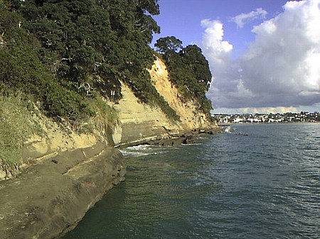
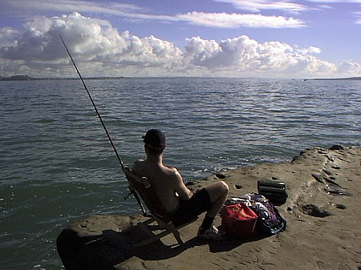
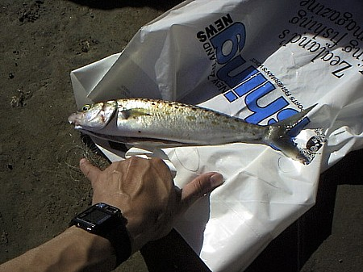
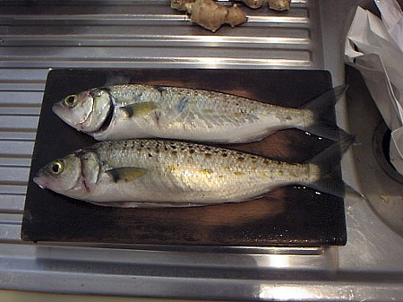

釣行日誌 ＮＺ編
初めてのカウワイ
1999/06/07
留学生活もはや一ヶ月が経ち、どうやらこちらの生活にも慣れたようだ。語学学校への通学の合間に仕入れた情報によると、ここニュージーランドはオークランドの海岸では、一年を通じてカウワイが釣れるらしい。NZフィッシングガイドマップよると、ホームステイ先のハーマン夫人宅からバスで行ける範囲にもいくつかカウワイの好ポイントがあるようだ......
ということで、先週から着々と準備を整え、友人のミン君から借りたロッドとリール（10ftの磯竿、とてもゴツイスピニングリール）、身を切られる思いで買った40gと25gのメタルジグ、それに9.5lbのラインを揃えた。釣り具はまったく持ってこなかったので、とにかくこのタックルで勝負するしかないのである。
出がけにハーマン夫人がバスでは時間がかかるからドライブがてら送っていってあげると言ってくださったのでお言葉に甘え、レディーズベイで降ろしてもらったのが朝の９時。それから２時間、なかなか良さそうなポイントと思われる岩礁、砂浜、沖合いのうねりの数々に向けて渾身のキャストを続けたものの、なんの反応も無い。いささか疲れて昼食にしようと思ったが、なんと！ 手製のサンドイッチはあるものの飲み物を持ってくるのを忘れた。
ガーン！ まぁしょうがない、とりあえずリンゴとバナナで軽く済ませ、帰る前に商店街でジュースを買ってランチとしよう.....と思い、散策道の階段に腰を降ろしてリンゴにかじりつく。遠くにオークランドの観光名所であるスカイタワーがそびえ立っている。なかなか未来的なシルエットである。

こうして座って見ていると、けっこう早いペースで潮が満ちているのに気が付く。前述のガイドブックによると今日の満潮は午後１時である。うーん、満潮前のベストタイムには何かアタリがあるかも？と淡い期待を抱く。朝のうちはだれもいなかった海岸も、しだいに散策や犬の散歩、そして幾人かの釣り人が訪れるようになった。
階段を下りてきて、こちらをじっと見ていたでっぷりとした体格のおじさんが声をかけてきた。
「なにか釣れたかい？」
「いやぁ、ここは初めてなもんで....」
「俺が思うには満潮になれば良くなると思うよ。だけどそのルアーはあんまり良い仕掛けではないなぁ。ここじゃ餌の方がいいぞ。」
ロシアから来てここに２年住んでいるというおじさんは、ちょくちょくこのへんで釣りをしているらしい。中心市街地から西へ40kmほど行った浜辺が良いそうだがなにぶん学生の身では足に限りがある。
「こないだここに来たときには連れが１ｍぐらいのサメを釣ったぜ！」
サメになけなしのジグを奪われるのは勘弁してほしいなと思っていると、こんどは東洋系の顔立ちの家族が大勢でにこにことやってきた。韓国から来ているという老夫婦とその長男夫婦、次男、そして子供たちである。ワイワイガヤガヤと釣り具をセットして魚の切り身を餌にリールの投げ釣りを始めた。お祖父さんの話では、ここへ来るのは今日が３回目で、こないだは小さいのを２尾釣っただけだと言う。ルアーにも来るかもしれないから頑張ってやってみろと励まされる。
一方今度は白人の若者がやってきて、イスにくつろぎつつ日光浴がてら、やはり餌の投げ釣りを始めた。オークランドは海岸も国際色豊かである。

若者が餌を投げ込んで間もなく彼の竿が大きくしなり、なにやら高速で泳ぐ魚が足下の波打ち際でファイトしているのが見えた。上手にあしらいながら引き上げた魚体がけっこう大きかったのであわてて駆け寄ると、岩の上でぴちぴちとサバそっくりの魚が跳ねている。
「これはなんて言う魚ですか？」
「うーん、カウワイの小さいやつだね」
『おーっ！ ここでも釣れるんだ！』
と、大いに勇気づけられて、俄然キャストにも力が入る。すると、韓国のみなさんの竿にも続々と30cmぐらいのカウワイが掛かり、たちまち岩場がにぎやかくなってきた。沖の方遠くがいいのか波打ち際の白波砕けるあたりがいいのか浅めか深めかまったくわからないのだがとにかく40gのジグをキャストしまくっていると、リーリングの最中にゴンッ！！と引ったくるような衝撃があり、嬉しくなる重量感が糸の先で走り出した。
「！！！！！ 来たぞ来たぞっ！」
海の魚独特の横走りで銀影が煌めく。なかなか弱らない。水面に寄せてからも幾度と無く横走りを繰り返し、このゴツイ竿でもなかなか苦労させられる。ようやく抜きあげられるかな？と思った矢先、あえなくフックが外れ、銀影は海の青に戻っていってしまった。
「.........」
あれを１尾釣っておけばハーマン夫人に自慢できたのに！ と岩をこぶしで叩いてみてもしょうがない。また釣れるさと思い直してキャストを繰り返す。
と、また沖合でゴンッ！と当たり、ぶるぶると竿をふるわせてかわいい魚影が上がってきた。なんなく抜きあげると20cmほどのカウワイである。うーん、初めて釣ったニュージーランドの海の魚はカウワイであったか！と感激もひとしおである。周囲に人がいなければ大声をあげて飛び跳ねているところである。
韓国のみなさんのところに持って行って、ありがとうございましたとお礼を述べつつリリースする。
午後１時を回り、いよいよ満潮である。寄せる波もザバンダブンと力強い。コケの一念でキャストを繰り返す。
「ゴンッ！！」
またしても突然の衝撃にいきなり竿が曲げられる。かなりゴツイ竿だと思っていたが、最初のアタリと寄せてきてからの逸走に耐えるにはこの竿でもかなり厳しいモノがある。銀白色が右往左往し、いなしては引かれ、寄せては走られ、なんとか波打ち際まで寄せてきた。こちらのいうとおりに魚体が向くようになったので思い切って岩棚まで抜きあげる。
「やったーっ！！」
無条件幸福の瞬間である。

結局この後、２回良いアタリがあり、このうち１尾をキャッチできた。今日の釣果はちょうど食べ頃のカウワイが２尾であった。１時半に竿を納め、デイパックを背負い、ロッドを抱え、２尾を納めたビニール袋を誇らしげに提げてバスに乗る。ハーマン夫人の家まではバスで３０分の道のりであった。

家に帰り、台所で魚をさばくことにする。これまで海の魚釣りにはあまり縁がなかったので、見よう見まねでカウワイを３枚に魚をおろす。４枚の切り身を皿に入れラップをかけて冷蔵庫に入れる。夫人が帰って来て、冷蔵庫を見たらきっと驚き、喜んでくれることだろう。これで面目が保てた。
釣行日誌ＮＺ編 目次へ
サイトマップ
ホームへ
お問い合わせ